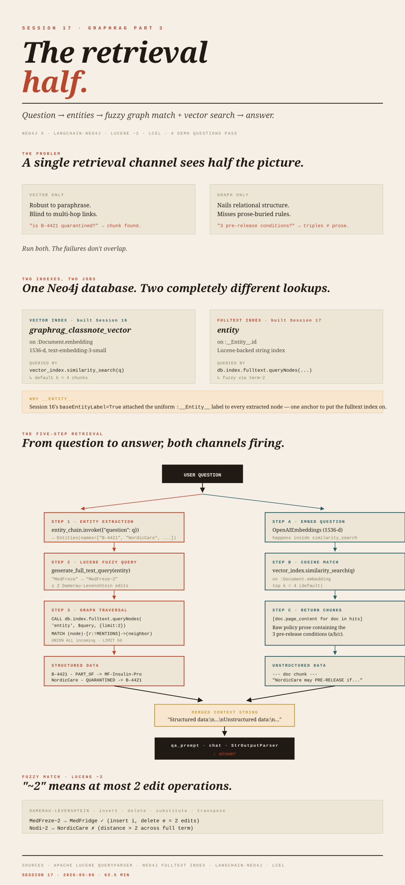

The retrievalhalf.
Take the knowledge graph from Session 16. Wire entity extraction, fuzzy graph search, and vector similarity into one chain that produces grounded answers.
LLMGraphTransformer to extract triples, loaded into Neo4j alongside per-chunk embeddings. Session 17 builds the retrieval half: at runtime, take a question, identify the entities the LLM sees, fuzzy-match them against the graph, walk one hop outward, run vector search in parallel, fuse both into one context, generate an answer.

The two-channel retriever, before any code
Goal: a function that takes a user question and returns a single context string assembled from two complementary lookups against the same Neo4j database.
- Structured (graph) retrieval. Identify the entities the question is asking about. Look them up in the graph. Walk one hop outward along their relationships. Return a list of relationship triples (
source - REL_TYPE -> target) as text. - Unstructured (vector) retrieval. Embed the whole question. Cosine-match it against the chunk embeddings on the
:Documentnodes. Return the top-k chunks as text.
Concatenate both into one block, feed it as {context} to a prompt template, send it to the LLM with the original {question}, return the answer.
The two channels fail differently. Vector search is robust to paraphrase but blind to multi-hop reasoning. Graph search nails relational questions but only finds entities that were extracted at indexing time and that the LLM also extracts at query time. Feeding both gives the LLM the best chance of having the right facts in context.
The retriever function is a service-layer method that orchestrates two repositories — one for graph queries, one for vector queries — and assembles a DTO (the context string) for a downstream collaborator (the LLM). The chain at the bottom of this page is the wiring; the prompt template is configuration.
One database, two completely different lookups
By the end of Session 16 the database has one index — the vector index the lecturer named graphrag_classnote_vector, created by Neo4jVector.from_documents(...). It sits on :Document nodes' embedding property and powers the unstructured channel.
For the structured channel we need a second, separate index: a Lucene full-text index on the id property of every entity node. Without it, "find the graph node whose name matches MedFreze" is a full scan — slow, and only an exact-string match. With it, we get sub-second fuzzy lookup.
| Vector index | Full-text index | |
|---|---|---|
| Purpose | Semantic similarity over chunks | Approximate keyword match on entity names |
| Built on | :Document.embedding (1536-d vectors) | :__Entity__.id (strings) |
| Created by | Neo4jVector.from_documents(...) — Session 16 | One-line Cypher CREATE FULLTEXT INDEX … — this session |
| Queried by | vector_index.similarity_search(question) | db.index.fulltext.queryNodes(name, query) |
| Match style | Cosine distance between embedding vectors | Lucene tokeniser + optional fuzzy edit distance |
__ENTITY__When Session 16 called kg.add_graph_documents(graph_documents, include_source=True, baseEntityLabel=True), the baseEntityLabel=True flag told langchain-neo4j to attach the uniform label :__Entity__ to every node extracted from text. Without it each node would only carry its specific label (:Company, :Contract, :Batch, …) and we'd have no single anchor to put a fulltext index on. The lecturer's phrase "every node has a secondary label called entity" is exactly this __Entity__ label.
Extract entities from the question
A question like "Per the policy pack, must batch B-4421 be quarantined, or can it be pre-released to a hospital back-order?" contains roughly two entities a graph search can do something with: B-4421 and NordicCare. The verbs and conditionals are not nodes — they're queries about nodes.
We use an LLM to do the extraction, with a Pydantic schema that tells the LLM exactly what shape to return.
from pydantic import BaseModel, Field
from typing import List
class Entities(BaseModel):
"""Identifying information about entities."""
names: List[str] = Field(
..., # Ellipsis = REQUIRED. No default, LLM must return a list.
description="Person, organization, product, or key technical concept "
"names that appear in the text (for graph-aware retrieval).",
)The three dots are Pydantic's "no default value, this field is mandatory." If you set it to None instead, the field becomes optional and the LLM is allowed to skip it. The description is passed to the LLM as part of the schema and shapes what it considers an "entity."
This is a typed response DTO with a @NotNull List<String> names field — except instead of validating an incoming JSON request, it's validating an outgoing LLM completion. The "validator" is the LangChain with_structured_output wrapper below.
A prompt template plus the LLM with the schema attached:
prompt = ChatPromptTemplate.from_messages([
("system",
"You extract person, organization, product, and notable concept entities "
"from the user's question for knowledge-graph lookup."),
("human",
"Extract entities from: {question}"),
])
entity_chain = prompt | chat.with_structured_output(Entities)chat.with_structured_output(Entities) does two things behind the scenes: it sends the JSON schema of Entities to the chat model (via OpenAI's response_format / function-calling mechanism), and it parses the response back into an Entities instance. The output of entity_chain.invoke({"question": "…"}) is a Python Entities object whose .names attribute is the extracted list.
with_structured_output is not a guarantee. It pins the JSON schema and validates the result. The LLM can still extract the wrong entities, hallucinate one that isn't in the graph, or miss one. We accept this and rely on the fuzzy match downstream to be forgiving.
Make the search forgiving with Lucene fuzzy queries
A user asking about "MedFreeze" should still match the node MedFridge in the graph. Exact-string matching can't do that; Lucene's fuzzy operator can.
from langchain_neo4j.vectorstores.neo4j_vector import remove_lucene_chars
def generate_full_text_query(input: str) -> str:
"""Convert free text into a Lucene fuzzy query.
Example: "MedFridge NordicCare" -> "MedFridge~2 AND NordicCare~2"
"""
full_text_query = ""
words = [el for el in remove_lucene_chars(input).split() if el]
if not words:
return ""
for word in words[:-1]:
full_text_query += f" {word}~2 AND"
full_text_query += f" {words[-1]}~2"
return full_text_query.strip()Three things happen:
remove_lucene_chars(input)strips characters that have special meaning in Lucene syntax —+ - && || ! ( ) { } [ ] ^ " ~ * ? : \ /. Leaving them in would either crash the parser or change query semantics.- Tokenise on whitespace.
- Append
~2to each token and join them withAND.
The ~2 is the load-bearing part. In Apache Lucene, term~N is a fuzzy match with up to N edit operations allowed, where an edit is one insertion, deletion, substitution, or transposition (Damerau-Levenshtein distance, not plain Levenshtein). N must be 0, 1, or 2; the default if omitted is 2.
So MedFreze~2 matches MedFridge because the two strings differ by two edits (insert i, delete e). NodiCare~2 matches NordicCare (insert r, delete i). Nodi~2 does not match NordicCare because the distance exceeds 2.
~2 as "plus 2, minus 2 characters." That's a useful intuition but not literally what Lucene does. ~2 means "at most 2 edit operations allowed across the whole term," not "two characters can be anything." For two-word queries connected by AND, both fuzzy clauses must match. Source: Apache Lucene QueryParser Syntax documentation, "Fuzzy Searches."
Create the full-text index on __Entity__.id
One line of Cypher, idempotent:
kg.query(
"CREATE FULLTEXT INDEX entity IF NOT EXISTS FOR (e:__Entity__) ON EACH [e.id]"
)Parse it as: CREATE FULLTEXT INDEX entity names the index entity; IF NOT EXISTS makes re-runs safe; FOR (e:__Entity__) scopes it to every node with the uniform entity label; ON EACH [e.id] indexes the id property of each one. (ON EACH [a, b] would index two properties independently.)
A full-text index in Neo4j 5 is a Lucene index wrapped in a Cypher-callable procedure. Once created, you query it via db.index.fulltext.queryNodes(indexName, queryString, options).
Run this once per database. The IF NOT EXISTS clause makes it safe to leave in the code — re-runs are no-ops.
The structured retriever
For each entity the LLM extracted, search the fulltext index, take the top hits, and walk one hop outward along every relationship that isn't :MENTIONS.
def structured_retriever(question: str) -> str:
"""Graph-based retrieval: extract entities, find them in the graph by
fulltext search, then traverse their relationships."""
result = ""
entities = entity_chain.invoke({"question": question})
for entity in entities.names:
print(f" Getting Entity: {entity}")
response = kg.query(
"""CALL db.index.fulltext.queryNodes('entity', $query, {limit:2})
YIELD node, score
CALL {
WITH node
MATCH (node)-[r:!MENTIONS]->(neighbor)
RETURN node.id + ' - ' + type(r) + ' -> ' + neighbor.id AS output
UNION ALL
WITH node
MATCH (node)<-[r:!MENTIONS]-(neighbor)
RETURN neighbor.id + ' - ' + type(r) + ' -> ' + node.id AS output
}
RETURN output LIMIT 50
""",
{"query": generate_full_text_query(entity)},
)
result += "\n".join([el["output"] for el in response])
return resultGoing through the Cypher:
CALL db.index.fulltext.queryNodes('entity', $query, {limit:2}) YIELD node, score— call the Lucene procedure on theentityindex with the fuzzy query string.{limit:2}says "return at most 2 fuzzy-matched nodes per call."YIELD node, scoreexposes both — we ignore the score and keep the node.- Subquery with
UNION ALL— twoMATCHclauses, one for each direction. WithoutUNION ALLwe'd only see outgoing edges and miss the ones where our entity is the target. [r:!MENTIONS]— the!is Cypher's relationship-type negation.r:!MENTIONSmeans "any relationship type exceptMENTIONS."RETURN output LIMIT 50— cap at 50 lines per entity to keep the prompt size sane.
The output for a single entity looks like this:
B-4421 - PART_OF -> MF-Insulin-Pro
B-4421 - CARRIED_BY -> Apex Cold
B-4421 - QUARANTINED_BY -> NordicCare
NordicCare - RELEASED -> B-4421
…6.1 — Why :MENTIONS is excluded
Session 16's add_graph_documents(..., include_source=True) call attached the source document to each extracted entity with a (:Document)-[:MENTIONS]->(:__Entity__) edge. That edge is provenance metadata, not a domain relationship. Following it would walk you back to the raw chunk text — useful for citation, useless for "what is this entity connected to?" The !MENTIONS filter keeps the traversal inside the entity graph.
MENTIONS always points from Document to Entity, not the other way. So the outgoing leg MATCH (node)-[r:!MENTIONS]->(neighbor) is already free of :MENTIONS when node is an :__Entity__ (entities don't have outgoing :MENTIONS). The !MENTIONS filter does its real work in the incoming leg, which would otherwise pull in every :Document that mentioned this entity. Excluding both directions is harmless and defensive.
6.2 — What "neighbor" means here
The lecturer used "neighbor" loosely. In this Cypher, neighbor = the node on the other end of one relationship (one hop). The query does not recurse — B-4421 -> Apex Cold is captured, but Apex Cold's own relationships are not, unless the LLM also extracted Apex Cold from the question. For two hops you'd write (node)-[r1:!MENTIONS]->(mid)-[r2:!MENTIONS]->(neighbor) and pay the cost in both traversal time and prompt size.
The vector channel
Same as Sessions 12–14, against the index Session 16 built.
unstructured_data = [
el.page_content for el in vector_index.similarity_search(question)
]Neo4jVector.similarity_search(query) defaults to k=4 — top 4 most cosine-similar chunks. The lecturer guessed "5 or 6"; the actual langchain-neo4j default is 4. Pass k=N to override.
Two reminders:
- The question gets embedded inside
similarity_search. You hand it the raw question string; under the hood it calls the same embeddings model (text-embedding-3-small) to turn the question into a vector, then runs cosine similarity against the stored chunk vectors. - The
:Documentnodes hold the raw text in theirtextproperty (text_node_property="text"in Session 16)..page_contentexposes it.
Combining both into one context string
def retriever(question: str):
print(f"Search query: {question}")
structured_data = structured_retriever(question)
unstructured_data = [
el.page_content for el in vector_index.similarity_search(question)
]
final_data = f"""Structured data:
{structured_data}
Unstructured data:
{chr(10).join(f"--- doc chunk ---{chr(10)}{t}" for t in unstructured_data)}
"""
return final_dataBoth calls run; results are concatenated under section headers; the string goes into the prompt. The headers (Structured data: / Unstructured data:) are themselves part of the prompt — they help the model interpret what each block is.
This is a ContextAssembler service whose collaborators are a GraphRepository (returns triples) and a VectorRepository (returns chunks), and whose product is a String formatted for the next stage. Pure composition, no state.
RunnableParallel, honestly explained
The full chain:
from operator import itemgetter
from langchain_core.runnables import RunnableLambda, RunnableParallel
from langchain_core.output_parsers import StrOutputParser
template = """Answer using ONLY the context below. Apply stated policies, numbers, and conditional rules explicitly.
If the context is insufficient, say what is missing - do not invent facts.
Context:
{context}
Question: {question}
Answer (clear and concise):"""
qa_prompt = ChatPromptTemplate.from_template(template)
chain = (
RunnableParallel(
{
"context": RunnableLambda(itemgetter("question")) | RunnableLambda(retriever),
"question": RunnableLambda(itemgetter("question")),
}
)
| qa_prompt
| chat
| StrOutputParser()
)Invoke with chain.invoke({"question": "…"}) → get a plain string back.
9.1 — Why RunnableParallel is needed
The lecturer's framing — "the question is getting lost without Runnable" — is loose. The honest mechanism:
qa_promptis a template with two placeholders —{context}and{question}. Filling it requires a dict shaped{"context": <str>, "question": <str>}.- The caller invokes the chain with
{"question": "…"}only. There is nocontextyet — it has to be computed from the question. RunnableParallel({...})runs each value of its dict on the same input and assembles a new dict from the results. It's the adapter that turns the input dict into the dict shape the prompt template needs.
"context"build the merged block
- itemgetter("question") — pulls the question string out of the input dict
- →
retriever(question) - = structured + unstructured concatenated
"question"pass through unchanged
- itemgetter("question") — pulls the question out of the input dict
- no further transformation
- = raw question string
The downstream stages are the standard LCEL chain: | qa_prompt fills the template, | chat calls the LLM and returns an AIMessage, | StrOutputParser() extracts .content as a plain str.
Composition with | is structurally similar to a Spring WebFilter chain or a Servlet FilterChain — each stage takes the previous stage's output and produces input for the next. The mismatch: each stage here may run an LLM call or a database query, and the output of chat is non-deterministic by nature. The plumbing is familiar; the determinism guarantee isn't.
9.2 — RunnableLambda vs RunnablePassthrough vs RunnableParallel
Three small classes from langchain_core.runnables appear across the RAG chains:
RunnableLambda(fn)wraps any plain Python callable so it can sit inside a|chain.RunnableLambda(itemgetter("question"))wrapsoperator.itemgetter("question").RunnableLambda(retriever)wraps ourretrieverfunction.RunnablePassthroughreturns its input unchanged. The "identity" wire. The simpler RAG chain in Session 13 might do{"context": retriever, "question": RunnablePassthrough()}. We don't use it here only because our input is a dict ({"question": "…"}) rather than a raw string, so we needitemgetterto dig out the value.RunnableParallel({...})runs the values of its dict in parallel on the same input and emits a new dict.
The lecturer flagged Runnable as an open assignment for Session 18 — "first you go through it, then I'll explain with visualization." The above is the working mental model; the deep-dive class will probably look at the LCEL source for these classes.
What the chain actually does on a real question
The lecturer ran four hand-crafted questions through the chain. The first:
"Batch B-4421 (MF-Insulin-Pro) had a single contiguous temperature excursion of 22 minutes above 8 °C before NordicCare received it. Per the policy pack, must the pallet be quarantined, or can it be pre-released to a hospital back-order — and what three conditions must be met for pre-release?"
The trace shows three things in sequence:
- Entity extraction.
entity_chainreturnsEntities(names=["B-4421", "NordicCare", "MF-Insulin-Pro"])(printed asGetting Entity: …lines). - Per-entity fulltext search + traversal. For
B-4421the structured retriever produces lines likeMedFridge - RELEASED -> B-4421,B-4421 - PART_OF -> MF-Insulin-Pro,B-4421 - CARRIED_BY -> Apex Cold. Same forNordicCare. - Vector retrieval returns four chunks of the policy pack — including the paragraph listing the three conditions for pre-release.
- LLM call with both blocks in
{context}. The model returns: "The pallet must be quarantined because the excursion exceeds 20 minutes. It can be pre-released to hospital back-order if (a) the excursion is at most 25 minutes, (b) MedFridge Medical Affairs emails written exception referencing batch stability report SR-B4421-REV-C, and (c) the hospital accepts residual risk form RF-77."
The answer is correct because the relevant chunk made it into the unstructured block. The graph block confirmed which batch was being discussed and tied it to MedFridge / NordicCare / Apex Cold, but the three conditions themselves are prose — they live in the chunk, not in the graph triples. Both channels contributed.
temperature=0 — this reduces sampling variance but does not make the LLM deterministic; identical inputs can still produce different outputs across runs.
10.1 — The other three questions
HelioStack / ACME (EA-2024-771) — graph linked ACME to the contract and to ACME Baltics; vector chunk supplied the prospective-not-retrospective rule from FIN-HS-09. Final answer correctly named "prospective adjustment, no clawback of cash already collected."
FobCo / RhineChem LC — entities FobCo, RhineChem, CTR-RH-303, LCI-9001. Vector chunk supplied the discrepancy-indemnity rule (DI-IND-01 signed before presentation). Graph confirmed the relationships between contracts, banks, and Incoterms.
Cross-check — "Does MedFridge recognize revenue when NordicCare only quarantines?" The graph held the rule as a triple; the answer (no, until Available for sale is posted in NCF-AS-01) came out of the merged context.
The pattern: graph channel anchors which entities to talk about; vector channel supplies the prose containing the rule.
A few details worth pinning down
pre_delete_collection=Truein theNeo4jVector.from_documents(...)call drops and recreates the vector index on every run. Useful during development; never in production — you'd re-embed everything for nothing (and pay OpenAI for the privilege). Lecturer's note: "I just want to show you end-to-end once."temperature=0onChatOpenAIreduces sampling randomness but is not a determinism guarantee. The OpenAI API still introduces small non-deterministic effects from server-side batching and floating-point order. For closer reproducibility you needseed=<int>plustemperature=0— and even then OpenAI documents "mostly deterministic."include_source=Trueinadd_graph_documents(Session 16) is what created the:MENTIONSedges we now exclude. Without it you wouldn't need!MENTIONSin your Cypher — but you'd also lose citation back to the source chunk if you wanted it later.StrOutputParser()at the tail unwraps theAIMessagereturned bychatinto its.contentstring. Without it the chain emits anAIMessageobject; with it, a plainstr.
What to remember
- GraphRAG retrieval has two channels. A structured retriever walks the knowledge graph; an unstructured retriever runs vector similarity over chunks. Both go into the LLM's prompt.
- Two indexes serve those two channels. A vector index on
:Document.embeddingand a Lucene full-text index on:__Entity__.id. - Entity extraction is an LLM step. A Pydantic class plus
chat.with_structured_output(...)shapes the LLM into returning a typed list of entity names. - Lucene
term~2allows up to 2 Damerau-Levenshtein edits per fuzzy term.MedFreze~2matchesMedFridge.remove_lucene_charsstrips special characters before query construction. !MENTIONSkeeps the traversal inside the entity graph — the:MENTIONSedge is provenance back to source documents, not a domain relationship.RunnableParallelis the adapter that turns{"question": "…"}into the{"context": "…", "question": "…"}shape the prompt template expects.- Both channels failing differently is what makes the combination valuable.
- Production caveats.
pre_delete_collection=Trueis for demos.temperature=0doesn't guarantee determinism. KeepIF NOT EXISTSon your fulltext-index DDL so re-runs are safe.
The Langgraph/ folder in the project root contains tutorial notebooks and code (LangChain agent tutorial, customer-service conditional-edge graph, coding-assistant human-in-the-loop). None of that material was discussed in Session 17, so none of it appears in these notes. Session 17 stays entirely on GraphRAG retrieval.
Glossary
- Structured retrieval
- In the GraphRAG context, the channel that extracts entities from the question, looks them up in the graph, and returns relationship triples as text.
- Unstructured retrieval
- The vector-similarity channel that returns raw text chunks from the index.
- Full-text index
- A Lucene-backed index in Neo4j 5 on one or more string properties. Queried via
db.index.fulltext.queryNodes(name, query, options). Created withCREATE FULLTEXT INDEX name FOR (e:Label) ON EACH [e.prop]. __Entity__- The uniform label that
langchain-neo4j'sadd_graph_documents(..., baseEntityLabel=True)attaches to every node extracted from text. Gives the fulltext index a single anchor. - Lucene fuzzy operator (
~N) - Suffix that turns an exact-match term into a fuzzy match allowing up to N edit operations (Damerau-Levenshtein distance). N ∈ {0, 1, 2}; default 2. Source: Apache Lucene QueryParser Syntax.
remove_lucene_charslangchain_neo4j.vectorstores.neo4j_vector.remove_lucene_chars. Strips Lucene's reserved characters from a string before it's used as a query term.!MENTIONS- Cypher relationship-type negation. Matches any relationship type except
MENTIONS. Extends to:!TYPE_A&!TYPE_Bfor multiple exclusions. db.index.fulltext.queryNodes- The Neo4j 5 procedure that runs a Lucene query against a named fulltext index. Returns
(node, score)rows. Accepts{limit:N},{skip:N},{analyzer:"…"}as options. MENTIONSedge- Created by
add_graph_documents(..., include_source=True). Direction is always(:Document)-[:MENTIONS]->(:__Entity__). Used for provenance, excluded from domain traversal. Entities(Pydantic class)- Response schema for the entity-extraction LLM call.
names: List[str] = Field(..., description=...). Ellipsis means required. with_structured_output(schema)- LangChain chat-model method that pins the response to a JSON schema (via OpenAI function-calling) and parses the result into a typed object.
RunnableParallel({...})- LCEL primitive that runs each value of its dict on the same input and assembles a new dict from the results. Used to map one input shape into another.
RunnableLambda(fn)- LCEL wrapper that lets any plain Python callable sit inside a
|chain. RunnablePassthrough()- LCEL primitive that returns its input unchanged. The "identity" wire. Appears in simpler RAG chains where the input is a raw string.
StrOutputParser- Final-stage LCEL parser that extracts the
.contentstring from anAIMessage. similarity_search(query, k=4)- Default top-k is 4 for
Neo4jVector. Embeds the query under the hood and runs cosine similarity. temperature=0- Sampling parameter that drives the LLM toward its highest-probability token at each step. Reduces variance, does not eliminate it.